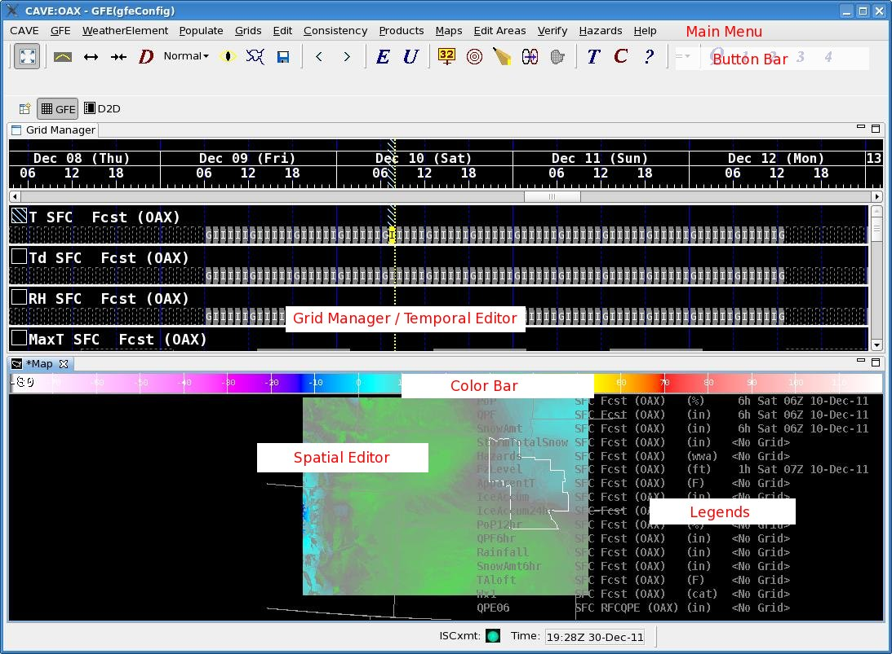

GFESuite
Documentation Guides
Main Documentation Page

Table of Contents
GFE Training Guide - provides
step-by-step
introduction to the GFE and its capabilities. Contains exercises.
GFE Reference Manual - provides
descriptions
of dialogs, menus, popups, and other associated information.
Other GFESuite Programs - user
guides to other programs, such as product generation programs.
Configuration Guides - how to
configure
the GFE and database server.
Release Notes - release notes for this
version.
Testing Information -
testing information (test cases and procedures) for this
version.
Splash Screens - descriptive
information about the GFESuite Splash Screens.